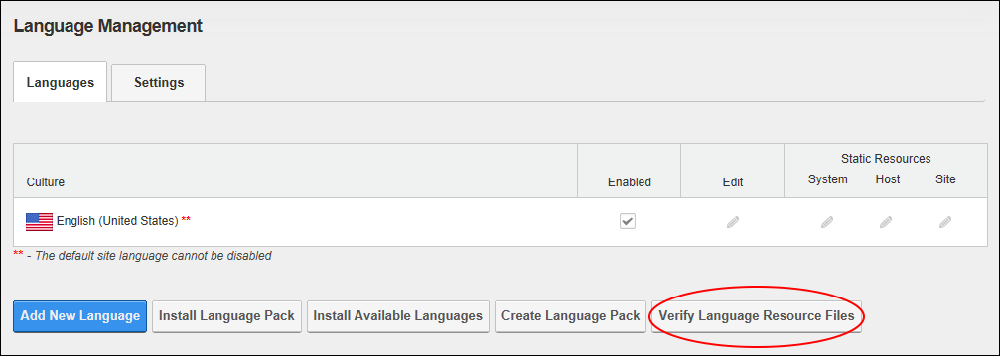
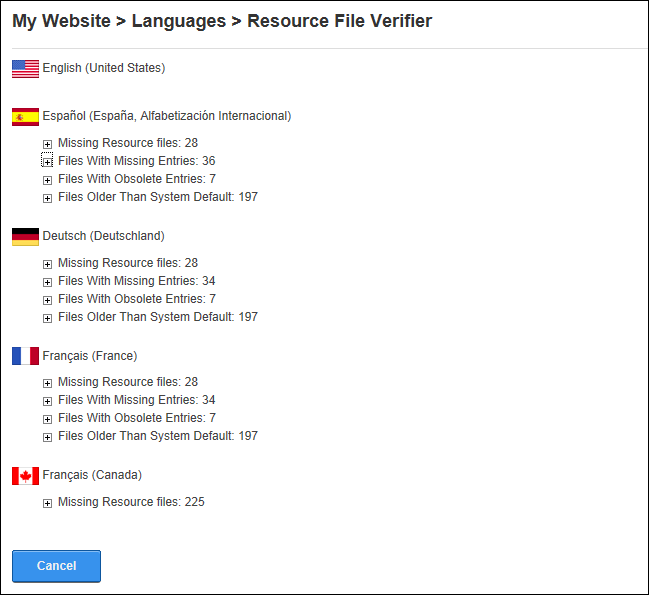

Verifying Resource Files
How to verify the resource files for missing file, entries, obsolete entries and old files. This task enables the Host to verify all the installed language packs in the site and check their status against the default system language. The verification process will look at all the system default resource files and compare them to the localized version for all supported languages.
Once you receive the report, and if any issues are found, you can use the Languages Localization Editor to solve all the issues reported. Restricted to SuperUsers only.
- Navigate to Admin > Advanced Settings >
 Languages - OR - Go to a Languages module.
Languages - OR - Go to a Languages module.
- Select the Languages tab.
- Click the Verify Language Resource Files button. This displays a report for each locale.

- Click the Maximize
 button to view details of any missing files, entries or obsolete entries. More on the types of issues that can be found for any resource file:
button to view details of any missing files, entries or obsolete entries. More on the types of issues that can be found for any resource file:
- Missing Resource Files: The localized version for a given resource file is missing. To correct this issue select the resource file on the Languages Localization Editor and the language where the error is given. The localized file will be automatically created.
- Files With Missing Entries: The localized version for a given resource file does not include some entries that are present on the default system resource file. To correct this issue select the resource file on the Languages Localization Editor and the language where the error is given. You will be given the option to add all missing keys to the localized resource file.
- Files With Obsolete Entries: The localized version for a given resource file includes some entries that are not present on the default system resource file. To correct this issue select the resource file on the Languages Localization Editor and the language where the error is given. All keys that are not necessary will be automatically deleted.
-
Files Older Than System Default:

- Click the Cancel button to return to the module.